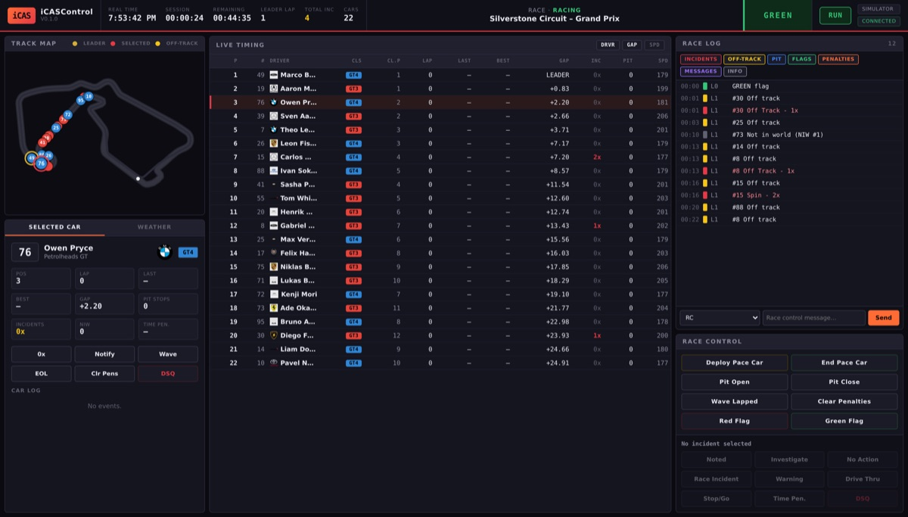

Unlike the broadcast overlays, iCASControl is not an OBS source — it is a full-screen control panel you open in a browser at localhost:8080. It gives a race director an animated track map, a complete live-timing table, and a race log with a full steward decision workflow, all updating in real time over WebSockets.
🔄 Three ways to run
The app is built around a swappable data source, so it behaves identically whether the race data is live, simulated or recorded.
Simulator mode
A complete, believable GT3 + GT4 race runs entirely inside the app on the real Silverstone circuit — no iRacing needed. Works on Windows, macOS and Linux, ideal for learning the interface, building features and recording demos.
iRacing mode
Reads live telemetry from a running copy of iRacing through its SDK and draws the real circuit map (200+ tracks bundled). Windows only, with iRacing running and Max Cars set to 63 so the whole field is reported.
Replay mode
Plays back a previously recorded race from a .jsonl log — the timing, track map and incident log all update exactly as in a live race, so a steward can review the event and scrub through the incidents afterwards.
On start-up it tries iRacing first and falls back to the simulator automatically — then switches to live data on its own within a few seconds once iRacing starts.
⚖ Tools for the race director
-
Live timing & animated track map Every car appears as a numbered roundel in its class colour — the selected car gets a red ring, the leader a gold one, off-track cars flash yellow. The centre table lists position, lap, last/best lap, gap or interval, incidents, pit stops and speed, with toggles for names, gap/interval and the speed column.
-
Steward decision workflow The race log records every incident, off-track, pit stop, flag and penalty, with filters to hide categories you don't need. Select an incident and record a decision — Noted, Investigating, No Action, Race Incident, Drive Through, Stop/Go, Time Penalty or DSQ — with per-car actions (0x, notify, wave-around, end-of-line, DSQ) alongside.
-
Race-control commands Deploy or end the pace car, open or close the pit lane, wave lapped cars, and post red or green flags — with NIW (not-in-world) counting, pit detection and flag handling built in.
-
Shares the overlay track library It reads the same bundled circuit geometry as the track-map overlay, so any track you have for the overlays is instantly available to the steward — 200+ circuits with the real map.
What works today — and what's coming
v0.1 is a working foundation. Live timing, the real track map, the incident and event log, gaps and intervals, pit detection, NIW counting, flag handling, manufacturer logos, the steward decision workflow and all race-control commands work fully in simulator and replay mode — that is what the screenshot above shows.
For live iRacing, timing, positions, surfaces, flags, weather and the circuit map are read straight from the SDK. Two limitations are deliberately flagged: iRacing's SDK doesn't expose a per-car incident count for other cars (so the log records off-track excursions and the steward assigns points manually), and it has no broadcast message for admin actions like full-course yellows or pit open/close (so the app shows the iRacing chat command to use). Automating both — plus a Sequencer, Auto-Steward and PDF/CSV exports — is on the roadmap.